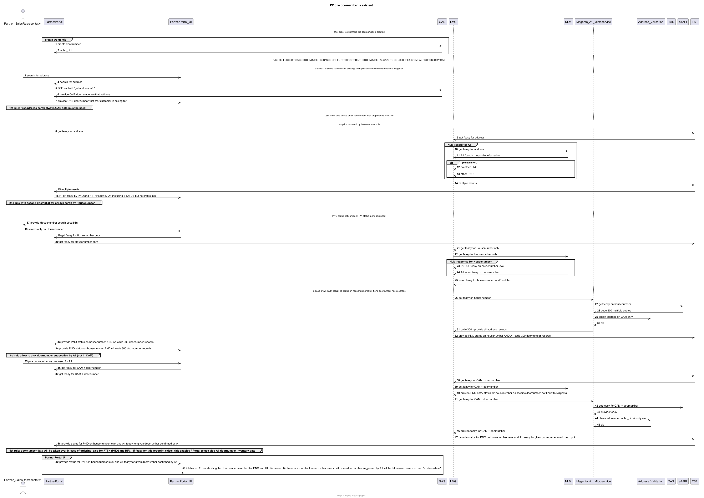

@startuml
autonumber
title PP one doornumber is existent
footer Page %page% of %lastpage%
actor Partner_SalesRepresentativ as ps
participant PartnerPortal as pp
participant PartnerPortal_UI as ppu
participant GAS as gas
participant LMG as lmg
participant NLM as nlm
participant Magenta_A1_Microservice as ms
participant Address_Validation as av
participant TAS as tas
participant a1API as a1
participant TSF as tsf
... after order is submitted the doornumber is created...
group create wohn_oid
pp -> gas: create doornumber
gas -> pp: wohn_oid
end
... USER IS FORCED TO USE DOORNUMBER BECAUSE OF HFC FTTH FOOTPRINT - DOORNUMBER ALWAYS TO BE USED IF EXISTENT AS PROPOSED BY GAS...
... situation: only one doornumber existing; from previous service order known to Magenta ...
ps -> ppu: search for address
ppu -> pp: search for address
pp -> gas: BFF - autofill "get address info"
gas -> pp: provide ONE doornumber on that address
pp -> ppu: provide ONE doornumber "not that customer is asking for"
group 1st rule: first address sarch always GAS data must be used
end
... user is not able to add other doornumber then proposed by PP/GAS...
... no option to search by housenumber only ...
pp -> tsf: get feasy for address
tsf -> lmg: get feasy for address
group NLM record for A1
lmg -> nlm: get feasy for address
nlm -> lmg: A1 found - no profile information
alt multiple PNO
nlm -> lmg: no other PNO
else
nlm -> lmg: other PNO
end
end
lmg -> tsf: multiple results
tsf -> pp: multiple results
pp -> ppu: FTTH feasy by PNO and FTTH feasy by A1 including STATUS but no profile info
group 2nd rule with second attempt allow always sarch by Housenumber
end
group for 2nd attempt allow Housenumber search (if PNO not sufficient)
... PNO status not sufficient - A1 status more advanced ...
ppu -> ps: provide Housenumber search possibility
ps -> ppu: search only on Housenumber
ppu -> pp: get feasy for Housenumber only
pp -> tsf: get feasy for Housenumber only
tsf -> lmg: get feasy for Housenumber only
lmg -> nlm: get feasy for Housenumber only
group NLM response for Housenumber
nlm -> lmg: PNO -> feasy on housenumber level
nlm -> lmg: A1 -> no feasy on housenumber
end
lmg -> lmg: as no feasy for housenumber for A1 call MS
... in case of A1, NLM setup: no status on housenumber level if one doornumber has coverage...
lmg -> ms: get feasy on housenumber
ms -> a1: get feasy on housenumber
a1 -> ms: code 300 multiple entries
ms -> av: check address on CAM only
av -> ms: ok
ms -> lmg: code 300 - provide all address records
lmg -> tsf: provide PNO status on housenumber AND A1 code 300 doornumber records
tsf -> pp: provide PNO status on housenumber AND A1 code 300 doornumber records
pp -> ppu: provide PNO status on housenumber AND A1 code 300 doornumber records
group 3rd rule allow to pick doornumber suggestion by A1 (not in CAM)
end
ps -> ppu: pick doornumber as proposed for A1
ppu -> pp: get feasy for CAM + doornumber
pp -> tsf: get feasy for CAM + doornumber
tsf -> lmg: get feasy for CAM + doornumber
lmg -> nlm: get feasy for CAM + doornumber
nlm -> lmg: provide PNO entry status for housenumber as specific doornumber not know to Magenta
lmg -> ms: get feasy for CAM + doornumber
ms -> a1: get feasy for CAM + doornumber
a1 -> ms: provide feasy
ms -> av: check address no wohn_oid -> only cam
av -> ms: ok
ms -> lmg: provide feasy for CAM + doornumber
lmg -> tsf: provide status for PNO on housenumber level and A1 feasy for given doornumber confirmed by A1
tsf -> pp: provide status for PNO on housenumber level and A1 feasy for given doornumber confirmed by A1
group 4th rule: doornumber data will be taken over in case of ordering; also for FTTH (PNO) and HFC - if feasy for this footprint exists; this enables PPortal to use also A1 doornumber inventory data
end
group PartnerPortal UI
pp -> ppu: provide status for PNO on housenumber level and A1 feasy for given doornumber confirmed by A1
ppu -> ppu: Status for A1 is indicating the doornumber searched for PNO and HFC (in case of) Status is shown for Housenumber level in all cases doornumber suggested by A1 will be taken over to next screen "address data"
end
@enduml